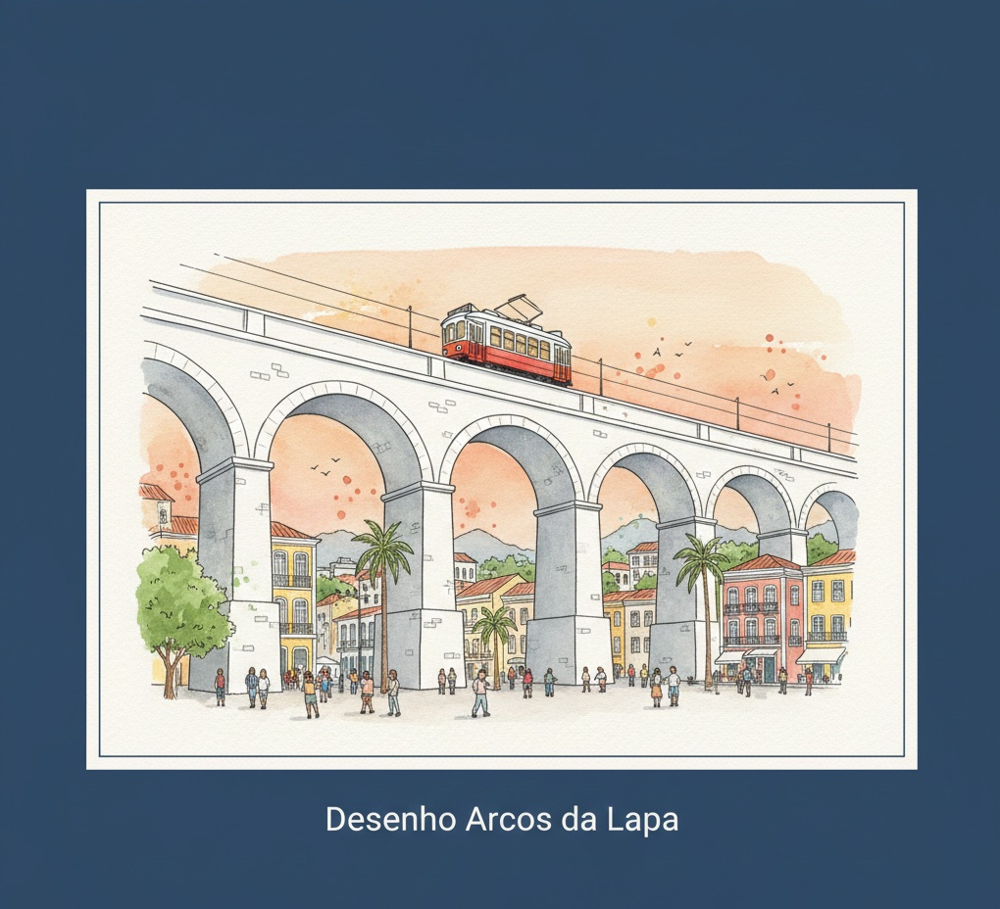
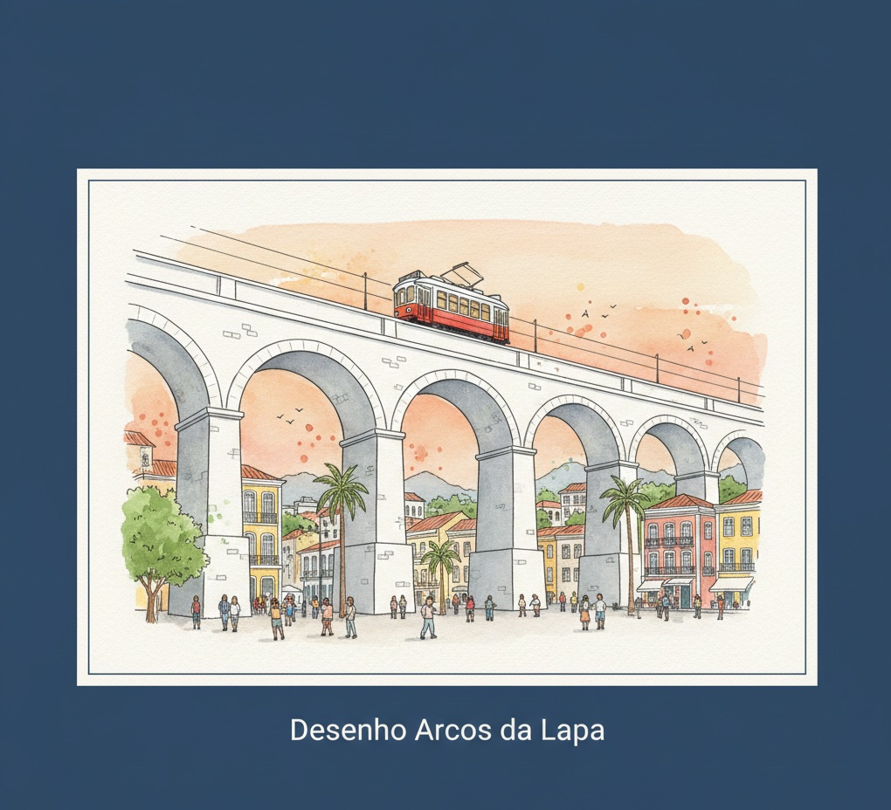
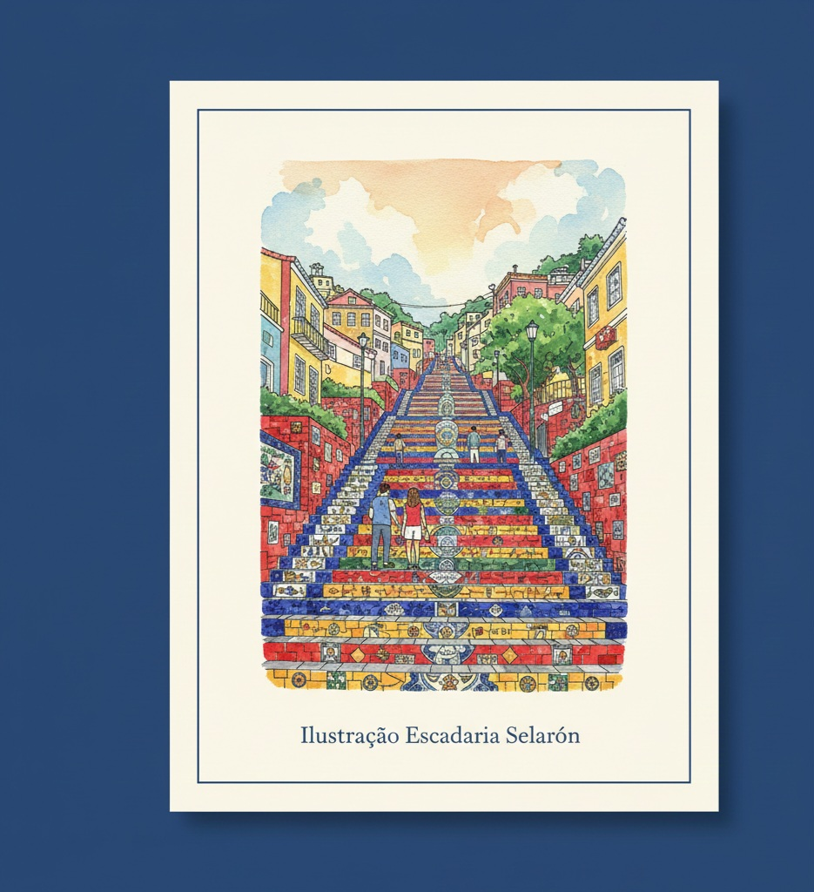
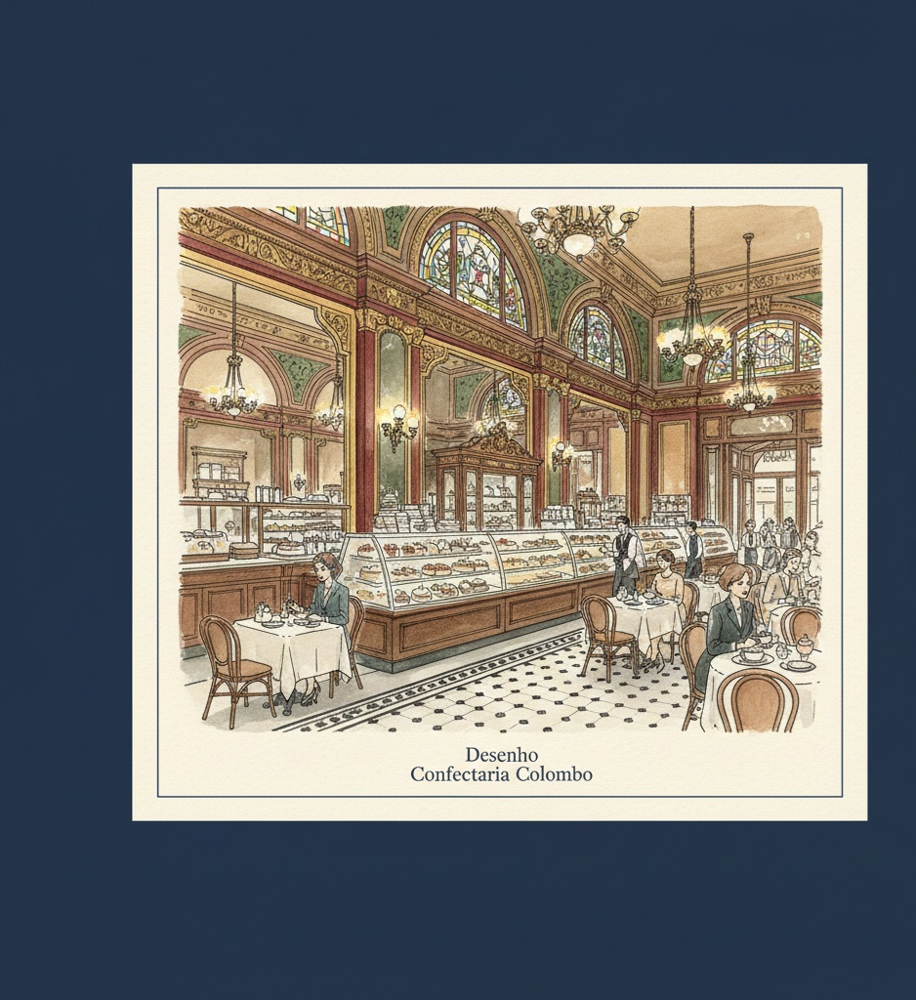
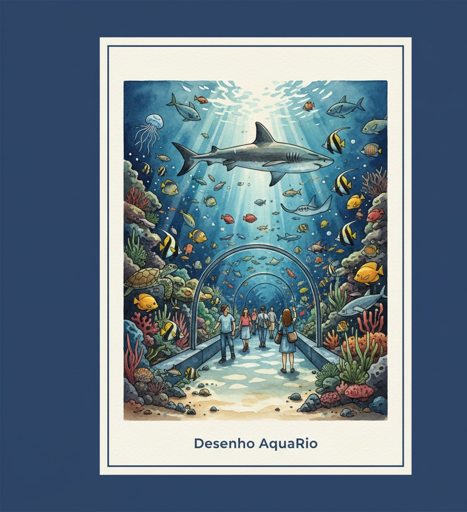
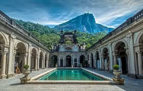
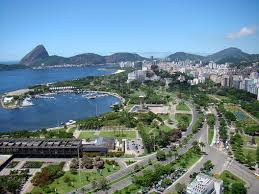
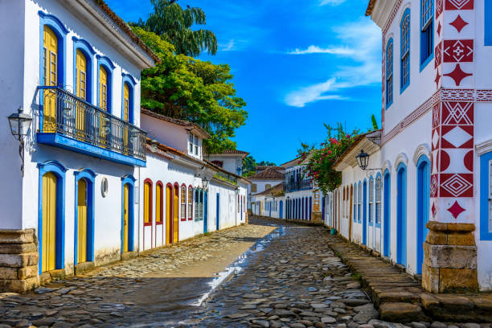

Arcos da Lapa
Um ícone da arquitetura colonial, ponto de encontro da boemia.
Um ícone da arquitetura colonial, ponto de encontro da boemia.
Mosaicos coloridos que conectam a Lapa a Santa Teresa - uma verdadeira obra de arte a céu aberto.
Um salão deslumbrante que remete à Belle Époque carioca, com seus espelhos e vitrais.
O maior aquário marinho da América do Sul, lar de milhares de espécies marinhas.
Uma obra-prima da arquitetura sustentável que explora as transformações do planeta e os caminhos para o futuro.

Aos pés do Corcovado, oferece trilhas, um palacete histórico e um café icônico cercado pela Mata Atlântica.
Do outro lado da ponte, famosa pelo MAC de Oscar Niemeyer e pela bela vista do Rio.
Berço de um dos maiores clubes de futebol do mundo, o bairro abriga o Aterro do Flamengo, o maior parque urbano à beira-mar do Rio.
Patrimônio Mundial da UNESCO, une casarios coloniais preservados e uma baía de águas calmas.
